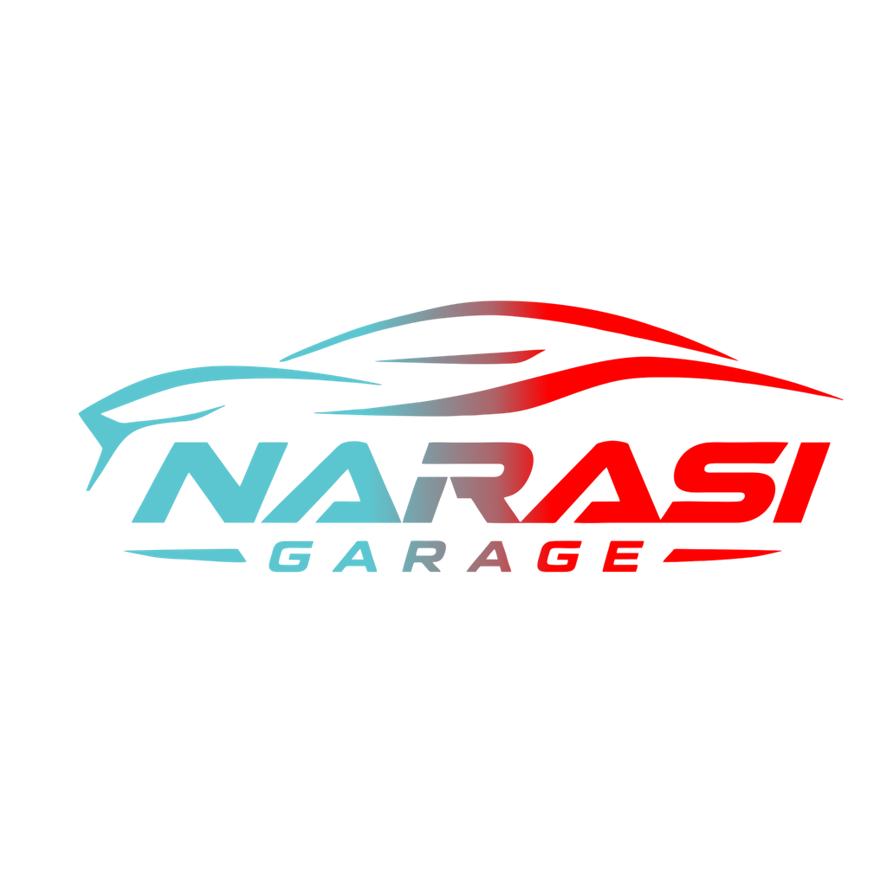

Pendaftaran Supervisor Narasi Garage dibuka. Pendaftaran Pekerja / Mekanik saat ini ditutup.
Saat ini hanya posisi Supervisor yang menerima pendaftaran.
Belum memilih posisi.
Isi data diri yang benar. Kolom tambahan disesuaikan dengan posisi yang dipilih.
Jawab semua 17 pertanyaan. Minimal 15 karakter untuk setiap jawaban.
Soalan diambil daripada Google Form Recruitment Narasi Garage. Jawab dengan jujur dan lengkap. Pilihan dengan cadangan jawapan juga boleh ditaip jika jawapan kamu lain.
Pastikan semua jawaban benar sebelum klik APPLY untuk mengirim pendaftaran.